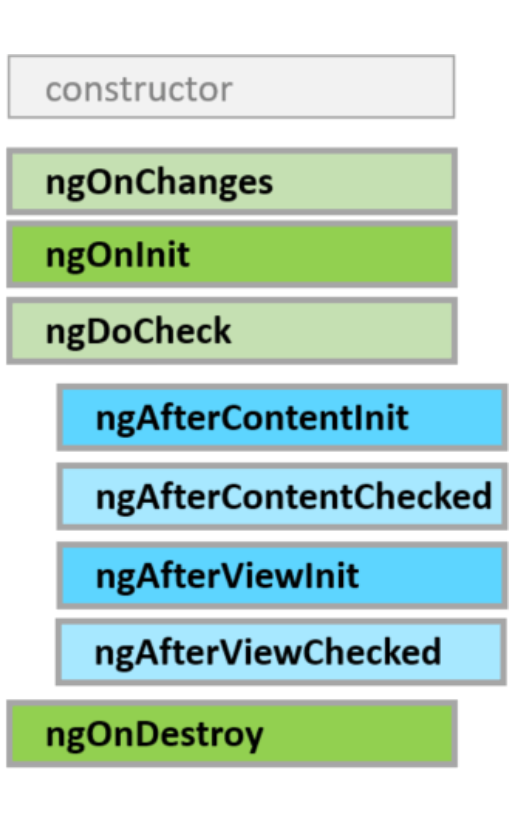

Life cycle of a component
Життєвий цикл (хук) спрацьовує в:
-
ngOnChanges
– зміни вхідних значень для властивостей
-
ngOnInit
– ініціалізації компонента (спрацьовує один раз)
-
ngDoCheck
– виклик механізму виявлення зміни значень властивостей компонента
-
ngAfterContentInit
– додавання вмісту до подання (в HTML-код), спрацьовує один раз
-
ngAfterContentChecked
– ініціалізації контенту та при кожній зміні вхідних параметрів.
-
ngAfterViewInit
– додавання вмісту до представлення (побудова DOM- структури та її
відображення)
-
ngAfterViewChecked
– ініціалізації контенту та при кожній зміні даних компонента (побудова
DOM-структури та її відображення).
-
ngOnDestroy
– момент до видалення компонента зі сторінки.
